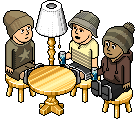

Hello there and welcome to KeepAnOpenMind.net, the newest openHabbo fansite around. We aim on giving you the highest quality fansite experience, along with the quality radio and radio stats application we've added to the top of the website. We are the best source for entertainment around the hotel, offering you competitions, goodies and news!
We also hold various events and competitions such as...
Win a room full of furniture!
Rare Competitions - Everybody needs/wants a rare!
Seasonal Quests
Chase Fleurs
So, let us ask you, what else is there to do? All you have to do now is browse the website as much as you like and don't forget to TUNE IN!
The Forum that we support here on KeepAnOpenMind is called vibeArray and is owned and ran by the creator of openHabbo and Force Hotel, Andrew! The Forum currently has over 10,000 members, meaning there is a huge community waiting for you to join them! If you don't understand what a Forum is, here is a definition...
Forum; A meeting or medium where ideas and views on a particular issue can be exchanged.
So, as you can see, a Forum is just a way of expressing yourself and talking to other people! So why not sign up today? Just click here!
So, I bet you're wondering what the radio is all about?
Of course we've already explained who the radio is ran by.. but what else could there be to say? Well, we need to explain to you that currently there is no request line this is due to openHabbo radio being such a new feature of the openHabbo hotel, there has currently been no DJ Panel set up. We have set up a request line that DOES NOT WORK this is just to create the feeling of a real request line for all you regular listeners!
The best chance of getting your song played on the radio is by talking to the DJ currently on air!
The News section of KeepAnOpenMind is very important to us, and we like to make sure that you are always up to date on the latest goings on around the hotel and how you can get involved!
We have a fantastic News Team that ensure that we arew the first to get all the information you need, unilke most fansites; we don't have news on the simple subjects, such as the hotel and the fansites, we also have news on the openHabbo staff, along with vibeArray and the radio! So you always know who is in and who is out of the radio team etc!